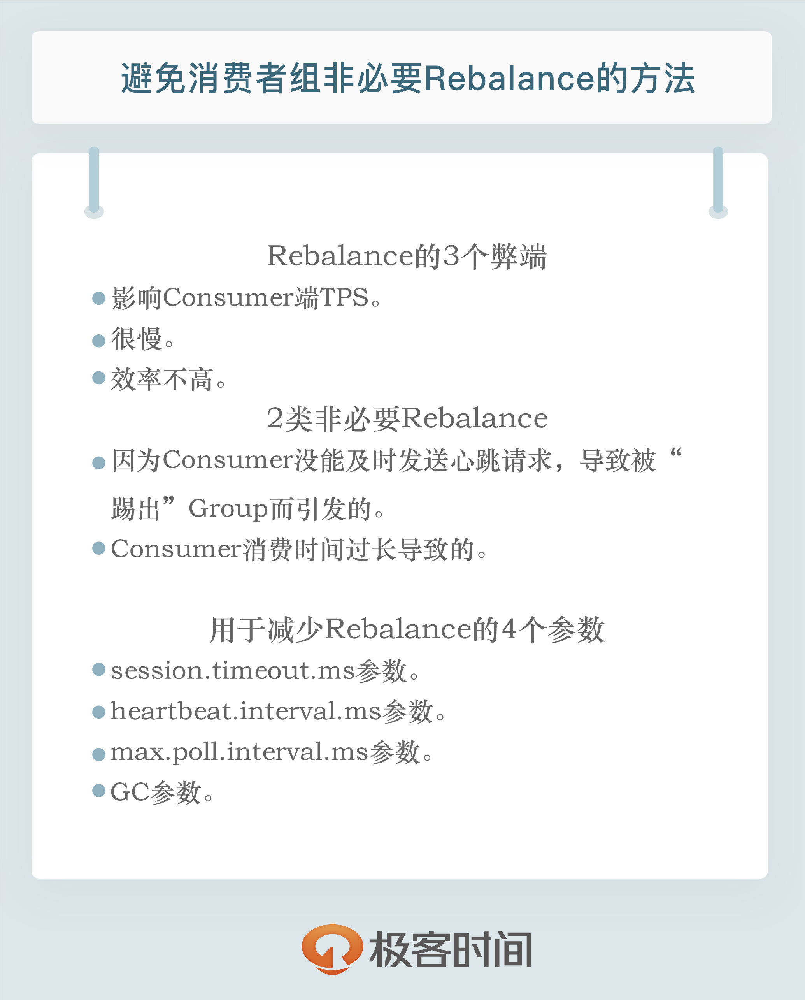

- 00 开篇词 为什么要学习Kafka？.md.html
- 01 消息引擎系统ABC.md.html
- 02 一篇文章带你快速搞定Kafka术语.md.html
- 03 Kafka只是消息引擎系统吗？.md.html
- 04 我应该选择哪种Kafka？.md.html
- 05 聊聊Kafka的版本号.md.html
- 06 Kafka线上集群部署方案怎么做？.md.html
- 07 最最最重要的集群参数配置（上）.md.html
- 08 最最最重要的集群参数配置（下）.md.html
- 09 生产者消息分区机制原理剖析.md.html
- 10 生产者压缩算法面面观.md.html
- 11 无消息丢失配置怎么实现？.md.html
- 12 客户端都有哪些不常见但是很高级的功能？.md.html
- 13 Java生产者是如何管理TCP连接的？.md.html
- 14 幂等生产者和事务生产者是一回事吗？.md.html
- 15 消费者组到底是什么？.md.html
- 16 揭开神秘的“位移主题”面纱.md.html
- 17 消费者组重平衡能避免吗？.md.html
- 18 Kafka中位移提交那些事儿.md.html
- 19 CommitFailedException异常怎么处理？.md.html
- 20 多线程开发消费者实例.md.html
- 21 Java 消费者是如何管理TCP连接的_.md.html
- 22 消费者组消费进度监控都怎么实现？.md.html
- 23 Kafka副本机制详解.md.html
- 24 请求是怎么被处理的？.md.html
- 25 消费者组重平衡全流程解析.md.html
- 26 你一定不能错过的Kafka控制器.md.html
- 27 关于高水位和Leader Epoch的讨论.md.html
- 28 主题管理知多少_.md.html
- 29 Kafka动态配置了解下？.md.html
- 30 怎么重设消费者组位移？.md.html
- 31 常见工具脚本大汇总.md.html
- 32 KafkaAdminClient：Kafka的运维利器.md.html
- 33 Kafka认证机制用哪家？.md.html
- 34 云环境下的授权该怎么做？.md.html
- 35 跨集群备份解决方案MirrorMaker.md.html
- 36 你应该怎么监控Kafka？.md.html
- 37 主流的Kafka监控框架.md.html
- 38 调优Kafka，你做到了吗？.md.html
- 39 从0搭建基于Kafka的企业级实时日志流处理平台.md.html
- 40 Kafka Streams与其他流处理平台的差异在哪里？.md.html
- 41 Kafka Streams DSL开发实例.md.html
- 42 Kafka Streams在金融领域的应用.md.html
- 加餐 搭建开发环境、阅读源码方法、经典学习资料大揭秘.md.html
- 用户故事 黄云：行百里者半九十.md.html
- 结束语 以梦为马，莫负韶华！.md.html
- 捐赠
17 消费者组重平衡能避免吗？
你好，我是胡夕。今天我要和你分享的内容是：消费者组重平衡能避免吗?
其实在专栏第15期中，我们讲过重平衡，也就是Rebalance，现在先来回顾一下这个概念的原理和用途。Rebalance就是让一个Consumer Group下所有的Consumer实例就如何消费订阅主题的所有分区达成共识的过程。在Rebalance过程中，所有Consumer实例共同参与，在协调者组件的帮助下，完成订阅主题分区的分配。但是，在整个过程中，所有实例都不能消费任何消息，因此它对Consumer的TPS影响很大。
你可能会对这里提到的“协调者”有些陌生，我来简单介绍下。所谓协调者，在Kafka中对应的术语是Coordinator，它专门为Consumer Group服务，负责为Group执行Rebalance以及提供位移管理和组成员管理等。
具体来讲，Consumer端应用程序在提交位移时，其实是向Coordinator所在的Broker提交位移。同样地，当Consumer应用启动时，也是向Coordinator所在的Broker发送各种请求，然后由Coordinator负责执行消费者组的注册、成员管理记录等元数据管理操作。
所有Broker在启动时，都会创建和开启相应的Coordinator组件。也就是说，所有Broker都有各自的Coordinator组件。那么，Consumer Group如何确定为它服务的Coordinator在哪台Broker上呢？答案就在我们之前说过的Kafka内部位移主题__consumer_offsets身上。
目前，Kafka为某个Consumer Group确定Coordinator所在的Broker的算法有2个步骤。
第1步：确定由位移主题的哪个分区来保存该Group数据：partitionId=Math.abs(groupId.hashCode() % offsetsTopicPartitionCount)。
第2步：找出该分区Leader副本所在的Broker，该Broker即为对应的Coordinator。
简单解释一下上面的算法。首先，Kafka会计算该Group的group.id参数的哈希值。比如你有个Group的group.id设置成了“test-group”，那么它的hashCode值就应该是627841412。其次，Kafka会计算__consumer_offsets的分区数，通常是50个分区，之后将刚才那个哈希值对分区数进行取模加求绝对值计算，即abs(627841412 % 50) = 12。此时，我们就知道了位移主题的分区12负责保存这个Group的数据。有了分区号，算法的第2步就变得很简单了，我们只需要找出位移主题分区12的Leader副本在哪个Broker上就可以了。这个Broker，就是我们要找的Coordinator。
在实际使用过程中，Consumer应用程序，特别是Java Consumer API，能够自动发现并连接正确的Coordinator，我们不用操心这个问题。知晓这个算法的最大意义在于，它能够帮助我们解决定位问题。当Consumer Group出现问题，需要快速排查Broker端日志时，我们能够根据这个算法准确定位Coordinator对应的Broker，不必一台Broker一台Broker地盲查。
好了，我们说回Rebalance。既然我们今天要讨论的是如何避免Rebalance，那就说明Rebalance这个东西不好，或者说至少有一些弊端需要我们去规避。那么，Rebalance的弊端是什么呢？总结起来有以下3点：
Rebalance影响Consumer端TPS。这个之前也反复提到了，这里就不再具体讲了。总之就是，在Rebalance期间，Consumer会停下手头的事情，什么也干不了。
Rebalance很慢。如果你的Group下成员很多，就一定会有这样的痛点。还记得我曾经举过的那个国外用户的例子吧？他的Group下有几百个Consumer实例，Rebalance一次要几个小时。在那种场景下，Consumer Group的Rebalance已经完全失控了。
Rebalance效率不高。当前Kafka的设计机制决定了每次Rebalance时，Group下的所有成员都要参与进来，而且通常不会考虑局部性原理，但局部性原理对提升系统性能是特别重要的。
关于第3点，我们来举个简单的例子。比如一个Group下有10个成员，每个成员平均消费5个分区。假设现在有一个成员退出了，此时就需要开启新一轮的Rebalance，把这个成员之前负责的5个分区“转移”给其他成员。显然，比较好的做法是维持当前9个成员消费分区的方案不变，然后将5个分区随机分配给这9个成员，这样能最大限度地减少Rebalance对剩余Consumer成员的冲击。
遗憾的是，目前Kafka并不是这样设计的。在默认情况下，每次Rebalance时，之前的分配方案都不会被保留。就拿刚刚这个例子来说，当Rebalance开始时，Group会打散这50个分区（10个成员 * 5个分区），由当前存活的9个成员重新分配它们。显然这不是效率很高的做法。基于这个原因，社区于0.11.0.0版本推出了StickyAssignor，即有粘性的分区分配策略。所谓的有粘性，是指每次Rebalance时，该策略会尽可能地保留之前的分配方案，尽量实现分区分配的最小变动。不过有些遗憾的是，这个策略目前还有一些bug，而且需要升级到0.11.0.0才能使用，因此在实际生产环境中用得还不是很多。
总而言之，Rebalance有以上这三个方面的弊端。你可能会问，这些问题有解吗？特别是针对Rebalance慢和影响TPS这两个弊端，社区有解决办法吗？针对这两点，我可以很负责任地告诉你：“无解！”特别是Rebalance慢这个问题，Kafka社区对此无能为力。“本事大不如不摊上”，既然我们没办法解决Rebalance过程中的各种问题，干脆就避免Rebalance吧，特别是那些不必要的Rebalance。
就我个人经验而言，在真实的业务场景中，很多Rebalance都是计划外的或者说是不必要的。我们应用的TPS大多是被这类Rebalance拖慢的，因此避免这类Rebalance就显得很有必要了。下面我们就来说说如何避免Rebalance。
要避免Rebalance，还是要从Rebalance发生的时机入手。我们在前面说过，Rebalance发生的时机有三个：
- 组成员数量发生变化
- 订阅主题数量发生变化
- 订阅主题的分区数发生变化
后面两个通常都是运维的主动操作，所以它们引发的Rebalance大都是不可避免的。接下来，我们主要说说因为组成员数量变化而引发的Rebalance该如何避免。
如果Consumer Group下的Consumer实例数量发生变化，就一定会引发Rebalance。这是Rebalance发生的最常见的原因。我碰到的99%的Rebalance，都是这个原因导致的。
Consumer实例增加的情况很好理解，当我们启动一个配置有相同group.id值的Consumer程序时，实际上就向这个Group添加了一个新的Consumer实例。此时，Coordinator会接纳这个新实例，将其加入到组中，并重新分配分区。通常来说，增加Consumer实例的操作都是计划内的，可能是出于增加TPS或提高伸缩性的需要。总之，它不属于我们要规避的那类“不必要Rebalance”。
我们更在意的是Group下实例数减少这件事。如果你就是要停掉某些Consumer实例，那自不必说，关键是在某些情况下，Consumer实例会被Coordinator错误地认为“已停止”从而被“踢出”Group。如果是这个原因导致的Rebalance，我们就不能不管了。
Coordinator会在什么情况下认为某个Consumer实例已挂从而要退组呢？这个绝对是需要好好讨论的话题，我们来详细说说。
当Consumer Group完成Rebalance之后，每个Consumer实例都会定期地向Coordinator发送心跳请求，表明它还存活着。如果某个Consumer实例不能及时地发送这些心跳请求，Coordinator就会认为该Consumer已经“死”了，从而将其从Group中移除，然后开启新一轮Rebalance。Consumer端有个参数，叫session.timeout.ms，就是被用来表征此事的。该参数的默认值是10秒，即如果Coordinator在10秒之内没有收到Group下某Consumer实例的心跳，它就会认为这个Consumer实例已经挂了。可以这么说，session.timeout.ms决定了Consumer存活性的时间间隔。
除了这个参数，Consumer还提供了一个允许你控制发送心跳请求频率的参数，就是heartbeat.interval.ms。这个值设置得越小，Consumer实例发送心跳请求的频率就越高。频繁地发送心跳请求会额外消耗带宽资源，但好处是能够更加快速地知晓当前是否开启Rebalance，因为，目前Coordinator通知各个Consumer实例开启Rebalance的方法，就是将REBALANCE_NEEDED标志封装进心跳请求的响应体中。
除了以上两个参数，Consumer端还有一个参数，用于控制Consumer实际消费能力对Rebalance的影响，即max.poll.interval.ms参数。它限定了Consumer端应用程序两次调用poll方法的最大时间间隔。它的默认值是5分钟，表示你的Consumer程序如果在5分钟之内无法消费完poll方法返回的消息，那么Consumer会主动发起“离开组”的请求，Coordinator也会开启新一轮Rebalance。
搞清楚了这些参数的含义，接下来我们来明确一下到底哪些Rebalance是“不必要的”。
第一类非必要Rebalance是因为未能及时发送心跳，导致Consumer被“踢出”Group而引发的。因此，你需要仔细地设置session.timeout.ms和heartbeat.interval.ms的值。我在这里给出一些推荐数值，你可以“无脑”地应用在你的生产环境中。
- 设置session.timeout.ms = 6s。
- 设置heartbeat.interval.ms = 2s。
- 要保证Consumer实例在被判定为“dead”之前，能够发送至少3轮的心跳请求，即session.timeout.ms >= 3 * heartbeat.interval.ms。
将session.timeout.ms设置成6s主要是为了让Coordinator能够更快地定位已经挂掉的Consumer。毕竟，我们还是希望能尽快揪出那些“尸位素餐”的Consumer，早日把它们踢出Group。希望这份配置能够较好地帮助你规避第一类“不必要”的Rebalance。
第二类非必要Rebalance是Consumer消费时间过长导致的。我之前有一个客户，在他们的场景中，Consumer消费数据时需要将消息处理之后写入到MongoDB。显然，这是一个很重的消费逻辑。MongoDB的一丁点不稳定都会导致Consumer程序消费时长的增加。此时，max.poll.interval.ms参数值的设置显得尤为关键。如果要避免非预期的Rebalance，你最好将该参数值设置得大一点，比你的下游最大处理时间稍长一点。就拿MongoDB这个例子来说，如果写MongoDB的最长时间是7分钟，那么你可以将该参数设置为8分钟左右。
总之，你要为你的业务处理逻辑留下充足的时间。这样，Consumer就不会因为处理这些消息的时间太长而引发Rebalance了。
如果你按照上面的推荐数值恰当地设置了这几个参数，却发现还是出现了Rebalance，那么我建议你去排查一下Consumer端的GC表现，比如是否出现了频繁的Full GC导致的长时间停顿，从而引发了Rebalance。为什么特意说GC？那是因为在实际场景中，我见过太多因为GC设置不合理导致程序频发Full GC而引发的非预期Rebalance了。
小结
总而言之，我们一定要避免因为各种参数或逻辑不合理而导致的组成员意外离组或退出的情形，与之相关的主要参数有：
- session.timeout.ms
- heartbeat.interval.ms
- max.poll.interval.ms
- GC参数
按照我们今天所说的内容，恰当地设置这些参数，你一定能够大幅度地降低生产环境中的Rebalance数量，从而整体提升Consumer端TPS。

开放讨论
说说在你的业务场景中，Rebalance发生的频率、原因，以及你是怎么应对的，我们一起讨论下是否有更好的解决方案。
欢迎写下你的思考和答案，我们一起讨论。如果你觉得有所收获，也欢迎把文章分享给你的朋友。
© 2019 - 2023 Liangliang Lee. Powered by gin and hexo-theme-book.